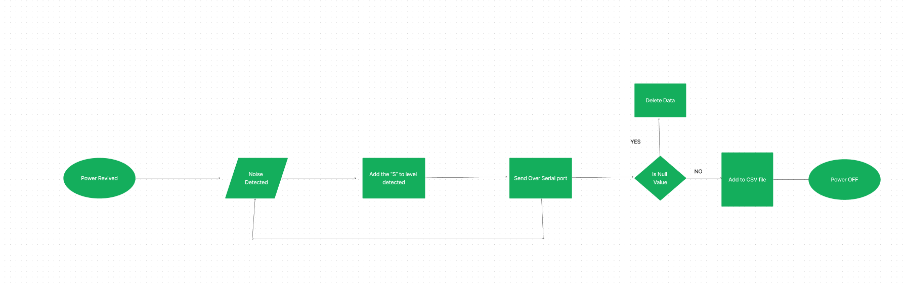

Design & Development
Following on from my investigation, it is clear to me that to satifisy the user requirements. I will need to create an artefact that monitors the study environment but also alerts the user when they have been studying to long.
Basic Requirements
- My interpretation of fully automated was the system itself was to be automated when it received power. I also want to allow the user to start tracking the time being passed
- I will use python code to take in data check its validity by checking for null values and corrupted data and preventing it from continuing as well as removing the new line artifacts that the mircrobit sends and store it in a csv file
- I will use python code to use to find the mean of the data and use this to inform the user about their wellbeing. I will find the mean of the temperature and use this to tell the user if their environment is to hot. and doing the same for sound levels
Advanced Requirements
- I will create a model that simulates studyscores, it will takes in the values before then preforming calculations on them to decide on a studyscores
- I will decide my 2 what if questions and create functions to modify datasets. I will then inform the user how these what if questions effected the studyscore.
- The first what if question i decided on was "what if the sound level is to high" and I will write a function to dataset to determine how this effects the model
- My second what if question I came up with was "what if temperature at heat wave levels" and again writing a function to create a dataset to feed into the model
- I will use the matplotlib library for python to graph my data in an easy to understand and compare format
Hardware required:
- Microbit
- Microphone
- Lux meter
- Gyro Meter
- Comport
- USB cable
Software Required:
- Python
- Makecode
- Windows
- Visual Studio Code
- GitHub (for extra redundancy when saving the code)
System Architecture Diagram

I used a tool called Figma to create my system architecture diagram this allowed me to plan my artefact more effectively as i was able to see a visual representation of what I needed to do.
Flow Chart
I also used Figma to create my flowchart to plan out the code for the microbit
